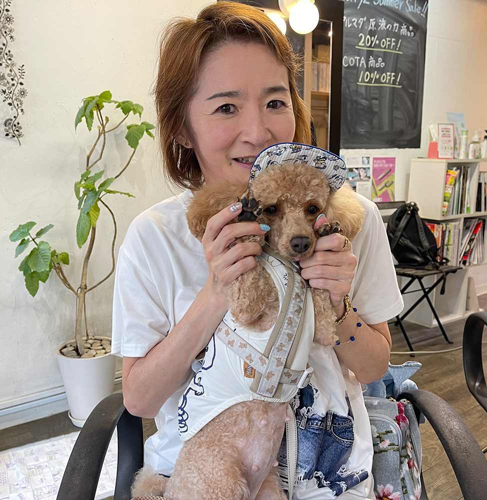
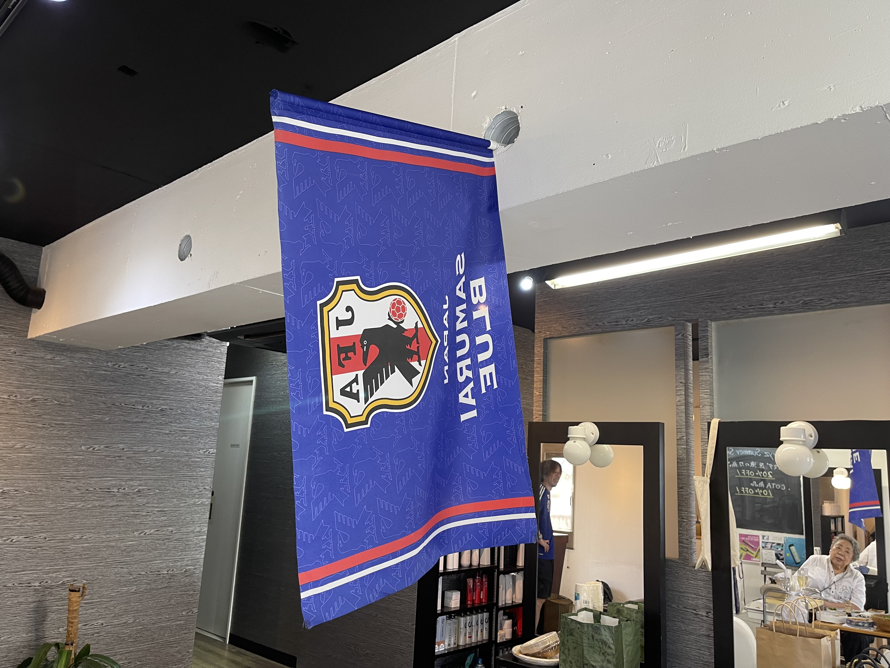
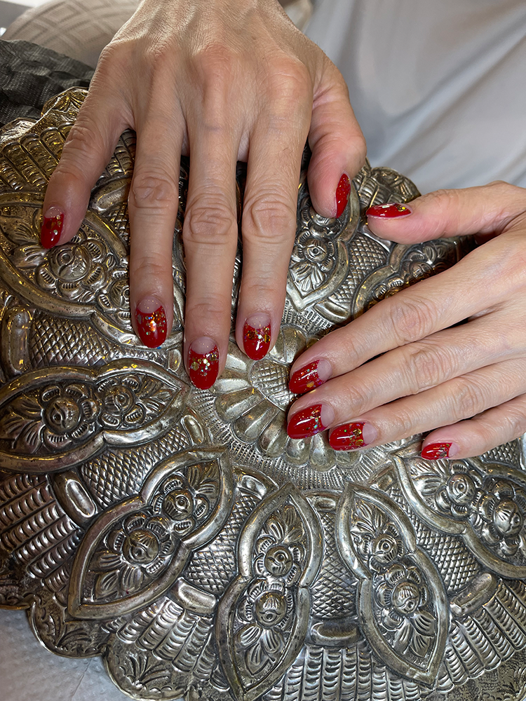
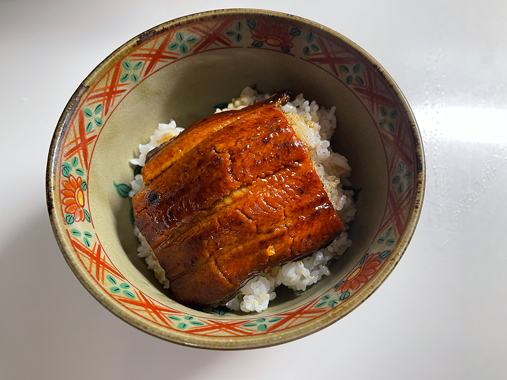
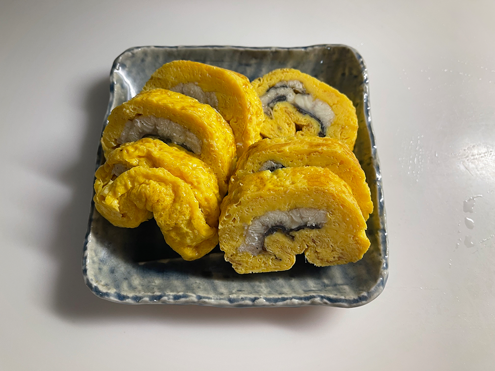
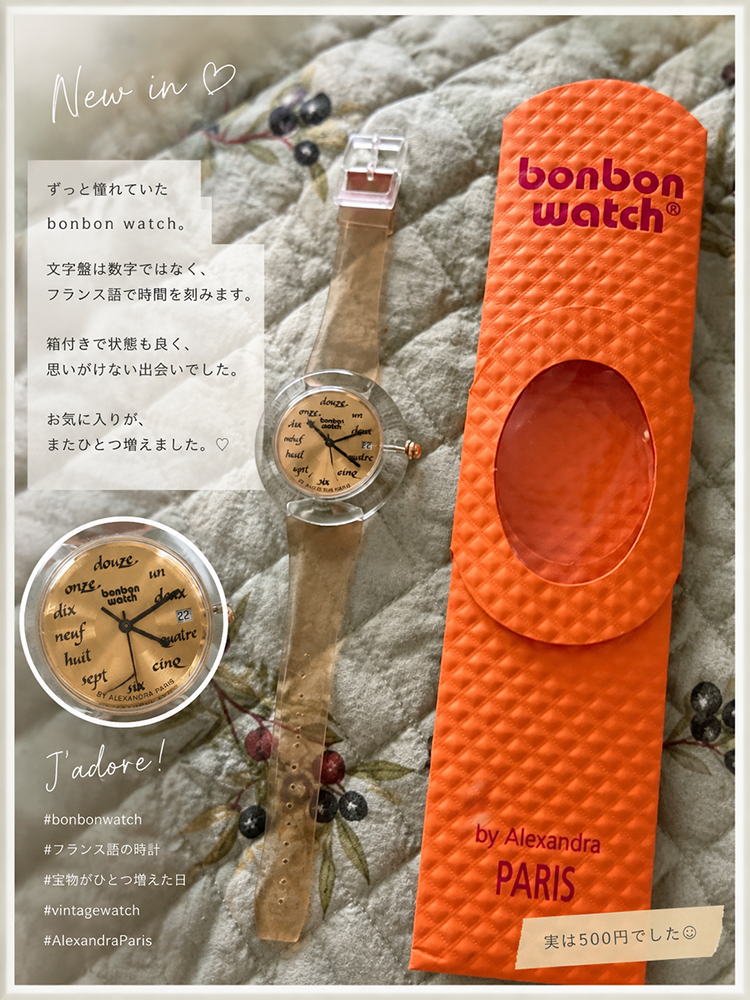

2026.06.16
空心菜とベビーコーンのタイ風炒め（パッパッカーナ・タオチオ）
一昨日、大量のベビーコーンを向いた。
ゴミ袋がいっぱになるほどだったけれど、その時は写真を取り忘れた（汗）。
昨日はそのベビーコーンを使って、空心菜と一緒にタイ風の炒め物にした。
調味料はタイのタオチオという味噌みたいなものと唐辛子とにんにく。
タイで覚えたお気に入りの味。
BGMはMichael Jackson.

一昨日、大量のベビーコーンを向いた。
ゴミ袋がいっぱになるほどだったけれど、その時は写真を取り忘れた（汗）。
昨日はそのベビーコーンを使って、空心菜と一緒にタイ風の炒め物にした。
調味料はタイのタオチオという味噌みたいなものと唐辛子とにんにく。
タイで覚えたお気に入りの味。
BGMはMichael Jackson.
小さな苗だったモンステラが、 ついに天井を目指し始めた。 支柱では追いつかず、 30cmほどカット。

切った先はキッチンで保護観察中。 我が家の植物たちは、 だいたいこうして増えていく。

昨日は、眠剤がまったく効かず、ほとんど眠れなかった
薬を追加したけれど、それ以上飲んだら危ないと思うところでやめた。
朝一番でマンモグラフィーの検査へ。
寝不足で体も痛く、少し気持ち悪かったけれど、なんとか終わった。
帰宅してから、倒れた・・・
でも、検査できず・・・
本来ならば、先週血液検査をするはずだったのだが、
受付のミスで、エコーとしか書いておらず、朝ごはん食べてしまい、
今週に変更。
ところが、中性脂肪を下げる薬が切れていたため、
それでは血を抜いても意味がない、と言われ、2週間後に変更・・・
今日は「検査の日」ではなく、「検査できないことが分かった日」だった。
今日はわさび茶漬けパスタにしようと思い、
いつものかめやのわさび茶漬けを探しに祖師ヶ谷大蔵駅前のOXに行ったのだが、
ま、昨日経堂OXにもなかったくらいだから、当然なくて、
カルディにも行ってみてもなく、オオゼキに行ったら、
な、なんと、幻の永谷園のわさび茶漬けを発見！
ここ数年どこにもなかったのに、まさかの出会い。
迷わず２袋をゲット。

採用ね、以前面接を受けた時の面接官が言った言葉「人事は人を切るのが仕事です」
という言葉に強い違和感を覚えた。
こういう人に採用を任せてはいけない、
そう思ったことを今でも覚えている。
だから、今回の採用のお仕事では、人を選別することではなく
会社の価値を高めることから始めたい。
前職で培った採用スキル、そして経営セミナーで学んだことを、
これから活かしていこうと思う。
この日は、母と帝国ホテルの嘉門へ。
鉄板焼きと言うと、お肉に目が行きがちですが、私がいつも楽しみにしているのは、それだけではありません。
料理が最も美しく見える器、季節を感じる盛り付け、スタッフのさりげない気配り。
どれも、自宅で料理を作るときや、お花を飾るときのヒントになります。
「美味しい」は味だけではなく、空間やサービスも含めて完成するもの。
そんなことを改めて感じた一日でした。

今日は、砧8丁目界隈のご近所さんたちの飲み会です！
前回は、長唄の家元のお宅でバーベキューでした。
今回は、私も行きつけの美容院にて。
マイお酒、1品以上のお料理を持ち寄って。
私は、豚肉とキャベツの炒め物、レモン風味、大根と豚肉の千切り炒め、サバのレモン風味リエット入りポテトサラダ持参
今日はルカちゃんを連れていこうかと思っています。


明日7/7は、年に一度の大腸の内視鏡検査の日。
昨日から食事制限は始まったのですが、今日は、かけうどん、おかゆ、カステラなど。
明日は10:45の予約を入れてしまったせいで、明日は早朝5:45から下剤開始・・・
帰り、ちゃんと帰れるかな・・・去年は脱水症状が酷くてめまいがしたから。
昨日、無事に検査が終わりました。
今年も2㎜のポリープが1つ見つかり、その場で切除。
今日はカステラとバウムクーヘン、豆腐で静かに過ごしながら、
マイケル・ジャクソンの"THIS IS IT"を流して、仕事探しをしてます。
午前中はルカちゃんと一緒にネイルサロンへ。夏らしい赤いネイルで少し元気をもらいました。

この日は豪徳寺の八木整骨院
詳しくは
こちら
をご覧ください。
そのついでに実家に寄ってきて、古い写真をもらってきました。
懐かしい写真をゲット。
2004年にQueen Elizabeth Ⅱに両親と乗船した時の写真。

7月26日は土用の丑の日で、うな丼とうまきをいただきました。うな丼は大満足！
ただ、うまきは私には少し甘すぎて、出汁の風味よりアまsが買っていたのが少し残念でした。
やっぱり私は、出汁がしっかり効いた出汁巻き卵の方が好みです。


昨夜のニュースで作家の東野圭吾さんが大腸がんで亡くなられたという訃報を知りました。
私はその場で泣いてしまいました。
数年前に亡くなった叔母と競うように、東野圭吾さんの本を読み続けてきました。
ほとんど読んでいるはずなのに、時間が経つと内容を忘れてしまい、何度読み返しても楽しめる作品ばかりです。
来月発売予定の新刊も予約しました。
まだまだ、先生の作品を読み続けたかった。
まだ死ぬのは早すぎますよ、先生・・・
まだ、お悔やみは申し上げられません・・・

私がbonbon watchを初めて知ったのは、2013年に初めて新店舗開店の為に博多に出張に行った時のこと。
博多でこのショップを見つけて、可愛いな～とずっと思っていました。
金額は大体15,000円から30,000円位だったけど、どうしても買えなかったのでした。
でも、その代わりに、博多から帰ってきて、今度はもうないプランタン銀座でbonbon watchに出会い、
青いスワロフスキーのついたリングを買ったのを覚えています。
それをヤフオクで、500円でゲットできたのは、自分へのプレゼント。文字盤がフランス語で書かれているのがお洒落。
